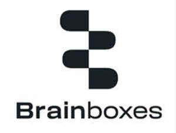

Trade Mark Journal No.2025/036 5 September 2025
UK00004243056 1 August 2025 (9,35,37,42)
Mark 1
Mark 2

Mark 3
- Class 9
- Apparatus and instruments for conducting, switching, transforming, and controlling electricity; network communication apparatus; industrial communication devices; wireless communication devices; network communication devices; ethernet switches; computer network switches; network hubs; network routers; intelligent gateways for communication; serial communication servers; ethernet to serial converters; USB to serial converters; serial cards; remote input/output (IO) modules; embedded computer hardware modules; industrial edge controllers; computer hardware for use in the Internet of Things (IoT); data acquisition instruments and electrical control boards; downloadable and recorded computer software and firmware for use in operating, configuring, and managing the aforesaid goods; electronic power supplies and electrical adapters for use with the aforesaid goods; parts and fittings for all the aforesaid goods.
- Class 35
- Retail and wholesale services, including online retail and wholesale services, connected with the sale of industrial communication devices; wireless communication devices, network communication devices, computer networking hardware, and computer software.
- Class 37
- Installation, maintenance, and repair of computer hardware, communication apparatus, and computer networking equipment.
- Class 42
- Scientific and technological services, research, and design relating thereto; industrial analysis and industrial research services; design and development of computer hardware, computer software, and computer firmware for industrial automation, networking, and control; cloud computing services; software as a service (SaaS) and platform as a service (PaaS) featuring software for connecting, managing, monitoring, and controlling industrial communication devices and Internet of Things (IoT) products; technical support services, namely, troubleshooting in the nature of diagnosing computer hardware and software problems in the field of industrial connectivity; custom design and engineering of communication devices, network devices, and remote input/output modules; consultancy in the field of industrial automation and the Internet of Things (IoT).
Brainboxes Limited
Representative: Barker Brettell LLP